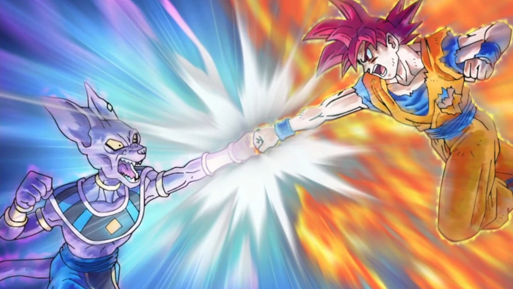
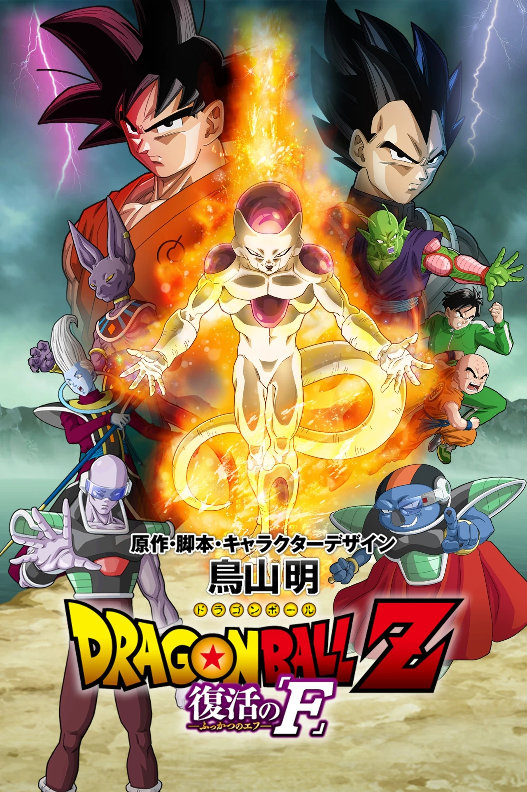
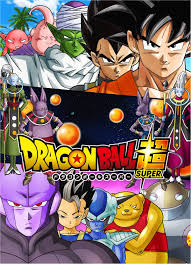
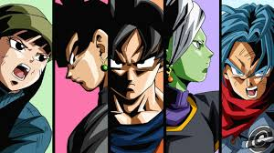
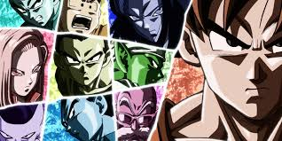
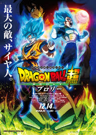
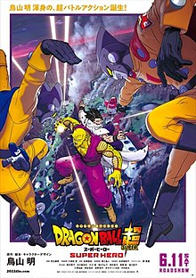

 After the fight against Boo , Earth experiences a period of peace. However, the God of Destruction, Beerus (破壊神ビルス, Hakaishin Birusu ? ) , has just awakened from a 39-year slumber with the intention of confronting the Super Saiyan Divine (超サイヤ人ゴッド, Sūpā Saiya- jin Goddo ? ) , the legendary warrior spoken of in an ancient prophecy expressed by the Fish Oracle. Beerus then goes in search of this Divine Super Saiyan. He appears on the planet Kaio, where Son Goku is. The latter decides to confront him but despite his power in Super Saiyan 3, he cannot beat him. Beerus then goes to Earth accompanied by the angel Whis. They meet Bulma, who will invite them to her birthday party. Everything goes well until Boo eats all the flans. Beerus gets angry and threatens to destroy planet Earth. But the return of Son Goku, a brief revelation from Shenron and a transformation into a Super Saiyan Divine succeeds in resolving all the worries, not to mention the fact that Beerus decides to spare the Earth due to the fact that he feels exhausted after his fight against the Z team.
 Frieza's henchmen steal Earth's Dragon Balls (first found in the hands of Pilaf and his gang) and resurrect Frieza. One of their machines gives the Tyrant the opportunity to recover all his limbs previously segmented by Trunks from the future. Thus, the Prince of Evil, having acquired a new golden transformation, entitled Golden Frieza, makes his return and disrupts peace on Earth while Son Goku and Vegeta, who have gone to train on Beerus' planet, are unaware of anything . But thanks to a quick call from Bulma, the return to Earth of Goku and Vegeta, both in Super Saiyan Blue, is enough to change the situation. During the fight between Vegeta and Golden Frieza who later returned to his initial appearance, the Earth ends up reduced to nothing. But Whis, who can only go back in time for a few seconds, allows Goku to correct this mistake and destroy Frieza in time.
 On Beerus' planet, another god of destruction appears, this one is none other than Beerus' brother in an obese version accompanied by Vados who is an angel like Whis. His name is Champa, he is the god of destruction of Universe 6 and comes to propose a bet to his brother. Meanwhile, Whis explains to Goku and Vegeta that there are other universes and that the one where all their adventures have taken place since the beginning is Universe 7 . Champa's bet consists of a tournament where several fighters from universes 6 and 7 will compete, the winner will win the Super Dragon Balls which can grant any wish. Beerus accepts and begins recruiting the fighters: Goku , Vegeta , Piccolo , Monaka and Buu . After a long journey to the planet which is located between the two universes where the tournament takes place, Goku and the others come across the Super Dragon Balls which are the size of a planet. So each fighter will face each other, except Buu who has fallen asleep. Universe 6 has the same species as Universe 7 (race of Frieza, Saiyans, etc. ). They are made up of five people: Frost , Hit , Cabba , Goldoma and Botamo . Universe 7 wins the tournament and the Super Dragon Balls. Beerus vows to restore the Earth of Universe 6 for his brother.
 In the future, Trunks is attacked again by an enemy, even more powerful than the cyborgs and Cell , this enemy is Black Goku who is the exact replica of the original Goku with dark and black clothes. He kills Mai and Bulma before Trunks' eyes, helpless. Trunks decides to return to the past to warn Goku and the others of the new threat. In the present, on Earth, peace reigns again. It is then that Trunks from the future arrives unconscious in the time machine, the Z team decides to help him. Once he comes to, he recounts everything that is happening in his future, such as the fact that he did not know Boo . At the end of his story, Goku decides to test Trunks' strength by fighting him. After demonstration, Trunks tells Goku that Black Goku is stronger than him and that it will be difficult to defeat him. Shortly after, Black emerges from a space-time portal and finds Trunks. Goku decides to confront him, the fight is merciless. During a punch, Goku touches Black's ring on his finger, which forcefully sends him back to the future, however he manages to destroy the time machine just before. Whis and Beerus point out that the ring Black is wearing is a Kaio god ring and that his aura gives off is similar to a Kaio god apprentice from Universe 10. They decide with Goku to go there. Meanwhile, Bulma goes to find the time machine that Cell arrived in, to repair it. Beerus, Whis and Goku arrive on the planet Kaio of Universe 10 where Gowasu (current master Kaio) and Zamasu his apprentice reside. They explain the situation and the subject of their coming, Goku insists on fighting Zamasu. After much insistence, Goku fights Zamasu, he and his master are impressed that a simple mortal can compete with a god. During the fight, Zamasu gives off an aura similar to that of Black, this arouses their suspicions, but without too hasty a conclusion. On Earth, Trunks visits Gohan and his family, he meets little Pan . For her part, Bulma has almost finished repairing the machine. Once Goku, Whis, and Beerus return, Trunks boards with Vegeta and Goku to return to his future. They take refuge in a subway station where the last survivors are hidden, Trunks finds Mai who survived, Yajirobe is also among them. Vegeta and Goku transform into Super Saiyan Blue and confront Black. Despite their attacks, they fail to defeat him, which is when Zamasu appears alongside Black. Goku then understands that Zamasu is unhealthy, that he is immortal and that he wants to destroy the planet. Together, Black and Zamasu torture Vegeta, but Yajirobé saves him along with Goku and Trunks, then they escape to return to their present. When they return, they regain their strength and find a way to defeat Black and Zamasu. For his part, the Zamasu of the present watches with his master the tournament between Universes 6 and 7, he then asks questions about Son Goku and the Super Dragon Balls to his master and to Zuno . The information reaches the ears of Whis and Beerus. The Z team understands that Zamasu hates mortals, and that he will use the Super Dragon Balls to make a first wish in order to become immortal. But as it takes several months for the Dragon Balls to regenerate, Zamasu will kill Gowasu to use the temporal ring to advance time and make a second wish, and then creates a false Goku, because in the past, he will see the the extent of the Saiyan's powers. Whis, Beerus, Shin and Goku immediately return to Universe 10 to save Gowasu. When Zamasu is about to serve tea to his master and subsequently kill him, Whis places a glove on Zamasu's hand and reveals his apprentice's Machiavellian plan to Gowasu. Zamasu having revealed his true face goes towards Goku to kill him, but Beerus intervenes and pulverizes him. Back on Earth, Beerus tells Trunks that the future is restored, to be clear, Trunks returns to the future with his father and Goku, but nothing has changed. After reuniting with Zamasu and Black, Goku and Vegeta tell them that they have figured out their "zero mortal" plan and that Black is a copy of Goku. But Black says that he is not a copy of Goku, that it is Zamasu who is inside Black's body. In fact Zamasu made a second wish to swap his body with that of Son Goku, to then kill him and his family and go back to another temporal dimension to ally with a Zamasu who had not yet killed Gowasu. After learning the truth, fights ensue until Trunks unleashes his anger on Zamasu and Black. He ends up holding them back and letting Vegeta and Goku leave to regain their strength. Back again in the present, they explain the situation and Goku decides to learn the Mafuba technique to imprison Zamasu, taught by Awesome Turtle who had used this technique against King Piccolo . Bulma decides this time to accompany Goku and Vegeta in the future in case of problems. Trunks was healed by Mai and goes into battle. After a slight unexpected incident, it is Trunks who uses the Mafuba (thanks to a tutorial from Piccolo) and imprisons Zamasu but he will free himself, because the talisman is not the right one. Gowasu and Shin come from the present to witness the death of the two Zamasu and give the potalas so that Goku and Vegeta can merge. Black and Zamasu do this before and create a superpowered being. Goku and Vegeta merge and give Zamasu a merciless fight. After the fusion is complete, it is Trunks who takes over using his sword with all of his friends' energies (like a Genkidama ) and slices Zamasu in two. The joy is only short-lived, Zamasu merges with the Universe and kills everything in sight with balls of energy. Except for Goku, Vegeta, Mai, Trunks, Shin and Gowasu, everyone is dead. Goku calls on Zeno (master of all universes who intervened in the tournament of universe 6), Goku calls the one from the future to destroy Zamasu, but he also destroys the Earth and everyone gets into the machine. Back on Earth, in the present, everyone returns to their occupations, Trunks and Mai go to a parallel future where Zamasu does not exist, but they will live with their double. As for Zeno from the future, he joins Zeno from the present in the palace. Peace returns to Earth again.
 Goku asks the two Zenos to organize a big tournament between all the Universes: Beerus and Whis. The High Priest then announces to the Universes the great tournament which will be held on a large arena in the world of nothingness. Each team will then have to choose their best warriors to win the Super Dragon Balls. The losing Universes will be erased by Zeno who believes that there are too many. The High Priest leaves a certain amount of time to bring together the 10 participants and so that they can train. The next day he organizes a pre-tournament with all the gods of destruction and the angels and a few fighters. For Universe 7, Boo, Mr. Satan , Gohan and Goku come to this pre-tournament and fight the warriors of universe 9 and 11. Toppo from universe 11 is much stronger than Goku and announces that a certain Jiren is even stronger than him and even surpasses their god of destruction. Having not yet said anything on the subject of the possible destruction of the Universe, Goku leaves to recruit the warriors: Krillin , Ten Shin Han , Piccolo , Kamé Sennin , C-18 , C-17 , Gohan , Vegeta and Boo . As the team prepared to leave, they learned of the destruction of the Universe and Goku's lie about the 10 million zenis. At the same time Boo fell asleep, impossible to wake him up, having no other choice Goku decides to bring Frieza back for a day despite his team's incomprehension. After a few adventures, Goku brings him back and with the promise of bringing him back to life with the dragon balls. On the large Arena built for fighters, several universes have arrived including universe 6 and universe 11. After all the Universes have arrived, the high priest reminds the rules: everyone fights at the same time, whoever falls is immediately eliminated and teleported to the stands, when a universe has lost its entire team, it is immediately erased by the Zenos. Participants must also stay on the arena as long as possible and eliminate their opponents. The winner is the one with the most fighters in the arena when the time is up. The Tournament can begin, the fights follow one another, the Zenos are amazed. After several fights, it is universe 9 which is erased first, followed by the other universes with the exception of 11 and 7. On the arena, Goku, Frieza and C17 are in difficulty against Jiren who is incredibly strong. Goku awakened in him the ultra instinct which consists of attacking without the brain having to think. This level is difficult to reach even for the gods of destruction. Next, Goku and Frieza will team up for the first time and defeat Jiren. On the arena, only C-17 remains, who wins the tournament. He makes a wish to the Super Dragon Balls to restore the destroyed universes (he initially wanted a cruise for his family), this will have been beneficial for universe 7 because the universe which did not make the wish to restore the universes , would have been destroyed, this tournament was just a show for Zeno. As a reward, Beerus asks Whis to resurrect Frieza for putting up a good fight. Each Universe returns to its business and lives peaceful lives. As for universe 7, the Z team is happy with the non-destruction, Vegeta and Bulma have a daughter, Bra , who is also Trunks' little sister, and peace reigns on Earth. For his part, Frieza resumes his functions as emperor.
 Frieza and his rebuilt army seek the Dragon Balls. During his search, Frieza meets two exiled Saiyan survivors, Broly and his father Paragus, the latter of whom wants revenge on Vegeta for his father exiling Broly before the Saiyan homeworld's destruction. Broly overpowers both Goku and Vegeta, until they fuse into Gogeta. However, before Gogeta can kill Broly, he is saved by Frieza's henchmen Cheelai and Lemo. Frieza flees Earth and vows revenge.
 Commander Magenta, CEO of Red Pharmaceuticals and son of the late Commander Red, recruits Dr. Gero's surviving grandson and genius scientist Dr. Hedo to help revive the Red Ribbon Army, while Goku, Vegeta and Broly train under Whis on Beerus' planet. Piccolo grows annoyed over Gohan's unhealthy focus on his academic work over his training, though Gohan admits that he has been doing some training. While taking care of Pan, Piccolo is ambushed by Red Ribbon android Gamma 2. Falsely believing that he has killed Piccolo, Gamma 2 returns to Red Ribbon Army's base, not knowing he has been tailed by Piccolo. While at the base, Piccolo discovers that Gamma 1 and 2 were created by Hedo to defeat Capsule Corporation and the Z fighters. Hedo also reluctantly uses Dr. Gero's schematics to create an improved version of Cell, known as Cell Max. Failing to make contact with Goku and Vegeta, Piccolo, disguised as a Red Ribbon Army soldier, volunteers to help "kidnap" Pan to lure Gohan to the base. Furious upon learning of his daughter's abduction, Gohan attacks the base, and teams up with Piccolo to take on both Gamma 1 and Gamma 2, while trying to convince the androids that they are being manipulated. Magenta runs off to activate Cell Max as a last resort, forcing both Gamma androids, Gohan and Piccolo to cooperate to take on the new enemy; and Bulma arrives with Goten, Trunks, Android 18 and Krillin for reinforcements. The ensuing battle results in Gamma 2 sacrificing himself before Gohan, transformed into a new "Beast" form, successfully defeats Cell Max. Gohan is reunited with Pan, while a repentant Hedo and Gamma 1 are given job positions at Capsule Corporation. On Beerus' planet, Goku and Vegeta learn from Whis the events that occurred on Earth, including Gohan's new power. After Magenta's funeral, his right-hand man Carmine and Soldier 15 attempt to avenge his and the Red Ribbon Army's demise. The two convinced Goten and Trunks (in their Saiyamen personas) to take out a "bad guy" (Gohan). Goten and Trunks realize the mistake upon reaching Gohan's house. Angered to see Red Ribbon Army survivors, Gohan transforms into "Beast"; it's so powerful Goku and Vegeta can sense it from Beerus' planet. This prompts Goku to arrive on Earth to see Gohan. Goku then takes his sons, Trunks, and accidentally Carmine and 15 to Beerus' planet. After Gohan spars with and beats Gotenks, Goku then challenges Gohan. Gohan and Goku then transform into their Beast and Mastered Ultra Instinct forms respectively and then spar with one another. The fight is even until Goku powers up further, which Gohan does as well; Gohan's overwhelming speed allows him to land several blows on Goku. Goku ends the fight to allow Broly to spar with Gohan. While fighting Beast Gohan, Broly transforms into a Super Saiyan, finally controlling it. Broly and Gohan's growing power agitates Vegeta, who impatiently challenges Gohan, prompting Goku, Goten and Trunks to rejoin the fight. The Saiyan free-for-all brawl results in Beerus' planet being damaged, much to the Destroyer God's anger and annoyance. After eating a meal following the brawl, the Saiyans (with Carmine and 15) return home to Earth.